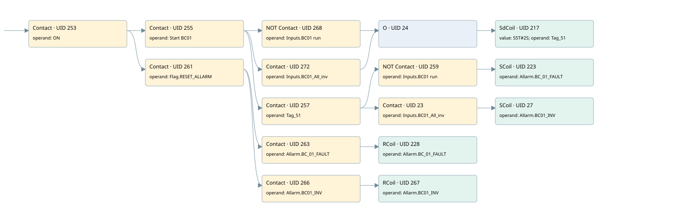

bc01
allarms 1 · 검색 색인 순서 5 · 원본 내부 NID 추정 5
백업 PLF 원본의 3036258 바이트 위치에서 복원한 XML. 검색 문서 1785의 객체 키 161022005762000000000000와 연결했다. 이름 해석 16/16개. 남은 RefId는 상수 또는 미해석 참조다.
연결 구조 다시 그리기
원본 Part/PCon/Wire를 이용한 연결도다. TIA 화면의 래더 배치 또는 실행 결과를 재현한 그림은 아니다. 핀 연결은 아래 표와 원본 XML을 기준으로 읽는다. 노드 위에 마우스를 두면 피연산자 이름을 볼 수 있다.

접점·코일·블록과 피연산자
| Part UID | Gate | Negated 핀 | 연결 피연산자 |
|---|---|---|---|
| 253 | Contact | operand = ON | |
| 255 | Contact | operand = Start BC01 | |
| 268 | Contact | operand | operand = Inputs.BC01 run |
| 272 | Contact | operand = Inputs.BC01_All_inv | |
| 24 | O | ||
| 217 | SdCoil | value = S5T#2S; operand = Tag_51 | |
| 257 | Contact | operand = Tag_51 | |
| 259 | Contact | operand | operand = Inputs.BC01 run |
| 223 | SCoil | operand = Allarm.BC_01_FAULT | |
| 23 | Contact | operand = Inputs.BC01_All_inv | |
| 27 | SCoil | operand = Allarm.BC01_INV | |
| 261 | Contact | operand = Flag.RESET_ALLARM | |
| 263 | Contact | operand = Allarm.BC_01_FAULT | |
| 228 | RCoil | operand = Allarm.BC_01_FAULT | |
| 266 | Contact | operand = Allarm.BC01_INV | |
| 267 | RCoil | operand = Allarm.BC01_INV |
접점 경로를 펼친 조건식
Contact·O/A·비교기의 원본 연결을 읽기 쉽게 펼친 보조 해석이다. POWER는 전원 레일 시작을 뜻한다. 호출 블록·에지·타이머의 내부 동작과 다중 쓰기 순서는 이 표로 실행 검증하지 않았다. 미해석 핀과 RefId는 원문 연결표에서 확인한다.
| UID | 동작 | 대상 | 원본 접점 경로 | 내용 |
|---|---|---|---|---|
| 217 | SdCoil | Tag_51 | (((ON AND Start BC01) AND NOT [Inputs.BC01 run]) OR ((ON AND Start BC01) AND Inputs.BC01_All_inv)) | 시간 동작 SdCoil; 타이머 의미 추가 확인 / 시간 인자 S5T#2S |
| 223 | SCoil | Allarm.BC_01_FAULT | (((ON AND Start BC01) AND Tag_51) AND NOT [Inputs.BC01 run]) | 조건 성립 시 Set |
| 27 | SCoil | Allarm.BC01_INV | (((ON AND Start BC01) AND Tag_51) AND Inputs.BC01_All_inv) | 조건 성립 시 Set |
| 228 | RCoil | Allarm.BC_01_FAULT | ((ON AND Flag.RESET_ALLARM) AND Allarm.BC_01_FAULT) | 조건 성립 시 Reset |
| 267 | RCoil | Allarm.BC01_INV | ((ON AND Flag.RESET_ALLARM) AND Allarm.BC01_INV) | 조건 성립 시 Reset |
원본 배선 연결
| Wire UID | 동일 Wire 연결 끝점 |
|---|---|
| 265 | Powerrail {} ↔ Part 253.in |
| 239 | ORef 229 (ON) ↔ Part 253.operand |
| 254 | Part 253.out ↔ Part 255.in ↔ Part 261.in |
| 240 | ORef 230 (Start BC01) ↔ Part 255.operand |
| 256 | Part 255.out ↔ Part 268.in ↔ Part 272.in ↔ Part 257.in |
| 271 | ORef 269 (Inputs.BC01 run) ↔ Part 268.operand |
| 22 | Part 268.out ↔ Part 24.in1 |
| 275 | ORef 273 (Inputs.BC01_All_inv) ↔ Part 272.operand |
| 25 | Part 272.out ↔ Part 24.in2 |
| 26 | Part 24.out ↔ Part 217.in |
| 241 | ORef 231 (S5T#2S) ↔ Part 217.value |
| 242 | ORef 232 (Tag_51) ↔ Part 217.operand |
| 243 | ORef 233 (Tag_51) ↔ Part 257.operand |
| 21 | Part 257.out ↔ Part 259.in ↔ Part 23.in |
| 244 | ORef 234 (Inputs.BC01 run) ↔ Part 259.operand |
| 260 | Part 259.out ↔ Part 223.in |
| 246 | ORef 235 (Allarm.BC_01_FAULT) ↔ Part 223.operand |
| 43 | ORef 44 (Inputs.BC01_All_inv) ↔ Part 23.operand |
| 42 | Part 23.out ↔ Part 27.in |
| 33 | ORef 34 (Allarm.BC01_INV) ↔ Part 27.operand |
| 248 | ORef 236 (Flag.RESET_ALLARM) ↔ Part 261.operand |
| 35 | Part 261.out ↔ Part 263.in ↔ Part 266.in |
| 249 | ORef 237 (Allarm.BC_01_FAULT) ↔ Part 263.operand |
| 264 | Part 263.out ↔ Part 228.in |
| 251 | ORef 238 (Allarm.BC_01_FAULT) ↔ Part 228.operand |
| 37 | ORef 38 (Allarm.BC01_INV) ↔ Part 266.operand |
| 39 | Part 266.out ↔ Part 267.in |
| 40 | ORef 41 (Allarm.BC01_INV) ↔ Part 267.operand |
식별자 해석 근거 16개
| ORef UID | RefId | 이름 | IdentXmlPart 파일 | 해석 방법 |
|---|---|---|---|---|
| 229 | 1 | ON | 0658-IdentXmlPart.xml | UID/RID + search-text + NID agreement |
| 230 | 27 | Start BC01 | 0658-IdentXmlPart.xml | UID/RID + search-text + NID agreement |
| 269 | 264 | Inputs.BC01 run | 0657-IdentXmlPart.xml | UID/RID + search-text + NID agreement |
| 273 | 265 | Inputs.BC01_All_inv | 0657-IdentXmlPart.xml | UID/RID + search-text + NID agreement |
| 232 | 29 | Tag_51 | 0658-IdentXmlPart.xml | UID/RID + search-text + NID agreement |
| 231 | 28 | S5T#2S | 0656-IdentXmlPart.xml | literal candidate: UID/RID/NID + nearby named declarations + search-text agreement |
| 233 | 29 | Tag_51 | 0658-IdentXmlPart.xml | UID/RID + search-text + NID agreement |
| 234 | 264 | Inputs.BC01 run | 0657-IdentXmlPart.xml | UID/RID + search-text + NID agreement |
| 235 | 31 | Allarm.BC_01_FAULT | 0657-IdentXmlPart.xml | UID/RID + search-text + NID agreement |
| 44 | 265 | Inputs.BC01_All_inv | 0657-IdentXmlPart.xml | UID/RID + search-text + NID agreement |
| 34 | 207 | Allarm.BC01_INV | 0657-IdentXmlPart.xml | UID/RID + search-text + NID agreement |
| 236 | 13 | Flag.RESET_ALLARM | 0657-IdentXmlPart.xml | UID/RID + search-text + NID agreement |
| 237 | 31 | Allarm.BC_01_FAULT | 0657-IdentXmlPart.xml | UID/RID + search-text + NID agreement |
| 238 | 31 | Allarm.BC_01_FAULT | 0657-IdentXmlPart.xml | UID/RID + search-text + NID agreement |
| 38 | 207 | Allarm.BC01_INV | 0657-IdentXmlPart.xml | UID/RID + search-text + NID agreement |
| 41 | 207 | Allarm.BC01_INV | 0657-IdentXmlPart.xml | UID/RID + search-text + NID agreement |
검색 코드 보조 자료
참조 명칭을 찾기 위한 자료이며 실행 순서나 AND/OR 관계는 위 연결표로 확인한다.
"on" "start bc01" "inputs"."bc01 run" "tag_51" s5t#2s "flag".reset_allarm "allarm".bc_01_fault "allarm".bc_01_fault "allarm".bc01_inv "allarm".bc01_inv "inputs".bc01_all_inv "tag_51" "inputs"."bc01 run" "allarm".bc_01_fault "inputs".bc01_all_inv "allarm".bc01_inv